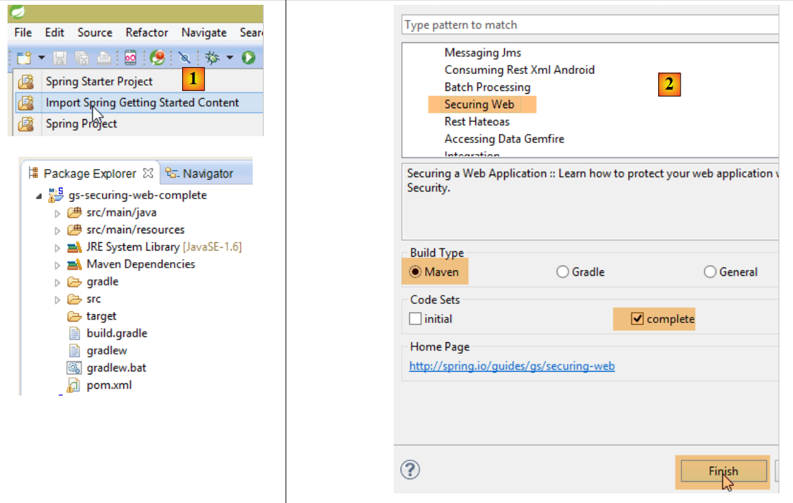
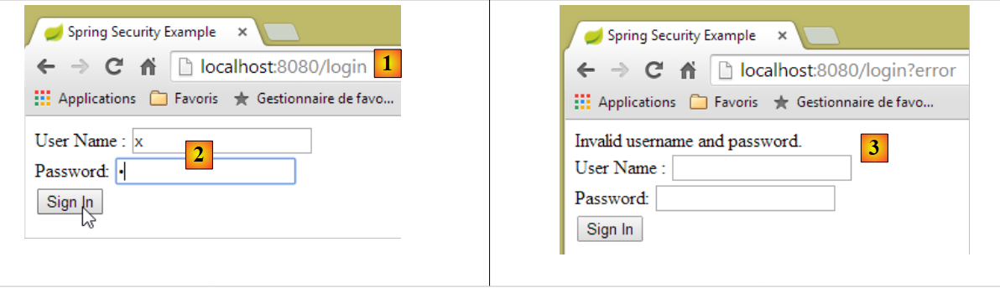

19. Sécuriser l'accès à un service web avec Spring Security
19.1. La place de Spring Security dans une application Web
Situons Spring Security dans le développement d'une application Web. Le plus souvent, celle-ci sera bâtie sur une architecture multicouche telle que la suivante :
 |
- la couche [Spring Security] n'accorde l'accès à la couche [web] qu'aux utilisateurs autorisés.
19.2. Un tutoriel sur Spring Security
Nous allons de nouveau importer un guide Spring en suivant les étapes 1 à 3 ci-dessous :
 |
 |
Le projet se compose des éléments suivants :
- dans le dossier [templates], on trouve les pages HTML du projet ;
- [Application] : est la classe exécutable du projet ;
- [MvcConfig] : est la classe de configuration de Spring MVC ;
- [WebSecurityConfig] : est la classe de configuration de Spring Security ;
19.2.1. Configuration Maven
Le projet [3] est un projet Maven. Examinons son fichier [pom.xml] pour connaître ses dépendances :
<?xml version="1.0" encoding="UTF-8"?>
<project xmlns="http://maven.apache.org/POM/4.0.0" xmlns:xsi="http://www.w3.org/2001/XMLSchema-instance"
xsi:schemaLocation="http://maven.apache.org/POM/4.0.0 http://maven.apache.org/xsd/maven-4.0.0.xsd">
<modelVersion>4.0.0</modelVersion>
<groupId>org.springframework</groupId>
<artifactId>gs-securing-web</artifactId>
<version>0.1.0</version>
<parent>
<groupId>org.springframework.boot</groupId>
<artifactId>spring-boot-starter-parent</artifactId>
<version>1.2.3.RELEASE</version>
</parent>
<dependencies>
<dependency>
<groupId>org.springframework.boot</groupId>
<artifactId>spring-boot-starter-thymeleaf</artifactId>
</dependency>
<!-- tag::security[] -->
<dependency>
<groupId>org.springframework.boot</groupId>
<artifactId>spring-boot-starter-security</artifactId>
</dependency>
<!-- end::security[] -->
</dependencies>
<properties>
<start-class>hello.Application</start-class>
</properties>
<build>
<plugins>
<plugin>
<groupId>org.springframework.boot</groupId>
<artifactId>spring-boot-maven-plugin</artifactId>
</plugin>
</plugins>
</build>
</project>
- lignes 10-14 : le projet est un projet Spring Boot ;
- lignes 17-20 : dépendance sur le framework [Thymeleaf] ;
- lignes 22-25 : dépendance sur le framework Spring Security ;
19.2.2. Les vues Thymeleaf
 |
La vue [home.html] est la suivante :
 |
<!DOCTYPE html>
<html xmlns="http://www.w3.org/1999/xhtml"
xmlns:th="http://www.thymeleaf.org"
xmlns:sec="http://www.thymeleaf.org/thymeleaf-extras-springsecurity3">
<head>
<title>Spring Security Example</title>
</head>
<body>
<h1>Welcome!</h1>
<p>
Click <a th:href="@{/hello}">here</a> to see a greeting.
</p>
</body>
</html>
- ligne 12 : l'attribut [th:href="@{/hello}"] va générer l'attribut [href] de la balise <a>. La valeur [@{/hello}] va générer le chemin [<context>/hello] où [context] est le contexte de l'application web ;
Le code HTML généré est le suivant :
<!DOCTYPE html>
<html xmlns="http://www.w3.org/1999/xhtml" xmlns:sec="http://www.thymeleaf.org/thymeleaf-extras-springsecurity3">
<head>
<title>Spring Security Example</title>
</head>
<body>
<h1>Welcome!</h1>
<p>
Click
<a href="/hello">here</a>
to see a greeting.
</p>
</body>
</html>
La vue [hello.html] est la suivante :
 |
<!DOCTYPE html>
<html xmlns="http://www.w3.org/1999/xhtml"
xmlns:th="http://www.thymeleaf.org"
xmlns:sec="http://www.thymeleaf.org/thymeleaf-extras-springsecurity3">
<head>
<title>Hello World!</title>
</head>
<body>
<h1 th:inline="text">Hello [[${#httpServletRequest.remoteUser}]]!</h1>
<form th:action="@{/logout}" method="post">
<input type="submit" value="Sign Out" />
</form>
</body>
</html>
- ligne 9 : L'attribut [th:inline="text"] va générer le texte de la balise <h1>. Ce texte contient une expression $ qui doit être évaluée. L'élément [[${#httpServletRequest.remoteUser}]] est la valeur de l'attribut [RemoteUser] de la requête HTTP courante. C'est le nom de l'utilisateur connecté ;
- ligne 10 : un formulaire HTML. L'attribut [th:action="@{/logout}"] va générer l'attribut [action] de la balise [form]. La valeur [@{/logout}] va générer le chemin [<context>/logout] où [context] est le contexte de l'application web ;
Le code HTML généré est le suivant :
<!DOCTYPE html>
<html xmlns="http://www.w3.org/1999/xhtml" xmlns:sec="http://www.thymeleaf.org/thymeleaf-extras-springsecurity3">
<head>
<title>Hello World!</title>
</head>
<body>
<h1>Hello user!</h1>
<form method="post" action="/logout">
<input type="submit" value="Sign Out" />
<input type="hidden" name="_csrf" value="b152e5b9-d1a4-4492-b89d-b733fe521c91" />
</form>
</body>
</html>
- ligne 8 : la traduction de Hello [[${#httpServletRequest.remoteUser}]]!;
- ligne 9 : la traduction de @{/logout} ;
- ligne 11 : un champ caché appelé (attribut name) _csrf ;
La dernière vue [login.html] est la suivante :
 |
<!DOCTYPE html>
<html xmlns="http://www.w3.org/1999/xhtml"
xmlns:th="http://www.thymeleaf.org"
xmlns:sec="http://www.thymeleaf.org/thymeleaf-extras-springsecurity3">
<head>
<title>Spring Security Example</title>
</head>
<body>
<div th:if="${param.error}">Invalid username and password.</div>
<div th:if="${param.logout}">You have been logged out.</div>
<form th:action="@{/login}" method="post">
<div>
<label> User Name : <input type="text" name="username" />
</label>
</div>
<div>
<label> Password: <input type="password" name="password" />
</label>
</div>
<div>
<input type="submit" value="Sign In" />
</div>
</form>
</body>
</html>
- ligne 9 : l'attribut [th:if="${param.error}"] fait que la balise <div> ne sera générée que si l'URL qui affiche la page de login contient le paramètre [error] (http://context/login?error);
- ligne 10 : l'attribut [th:if="${param.logout}"] fait que la balise <div> ne sera générée que si l'URL qui affiche la page de login contient le paramètre [logout] (http://context/login?logout);
- lignes 11-23 : un formulaire HTML ;
- ligne 11 : le formulaire sera posté à l'URL [<context>/login] où <context> est le contexte de l'application web ;
- ligne 13 : un champ de saisie nommé [username] ;
- ligne 17 : un champ de saisie nommé [password] ;
Le code HTML généré est le suivant :
<!DOCTYPE html>
<html xmlns="http://www.w3.org/1999/xhtml" xmlns:sec="http://www.thymeleaf.org/thymeleaf-extras-springsecurity3">
<head>
<title>Spring Security Example </title>
</head>
<body>
<div>
You have been logged out.
</div>
<form method="post" action="/login">
<div>
<label>
User Name :
<input type="text" name="username" />
</label>
</div>
<div>
<label>
Password:
<input type="password" name="password" />
</label>
</div>
<div>
<input type="submit" value="Sign In" />
</div>
<input type="hidden" name="_csrf" value="ef809b0a-88b4-4db9-bc53-342216b77632" />
</form>
</body>
</html>
On notera ligne 28 que Thymeleaf a ajouté un champ caché nommé [_csrf].
19.2.3. Configuration Spring MVC
 |
La classe [MvcConfig] configure le framework Spring MVC :
package hello;
import org.springframework.context.annotation.Configuration;
import org.springframework.web.servlet.config.annotation.ViewControllerRegistry;
import org.springframework.web.servlet.config.annotation.WebMvcConfigurerAdapter;
@Configuration
public class MvcConfig extends WebMvcConfigurerAdapter {
@Override
public void addViewControllers(ViewControllerRegistry registry) {
registry.addViewController("/home").setViewName("home");
registry.addViewController("/").setViewName("home");
registry.addViewController("/hello").setViewName("hello");
registry.addViewController("/login").setViewName("login");
}
}
- ligne 7 : l'annotation [@Configuration] fait de la classe [MvcConfig] une classe de configuration ;
- ligne 8 : la classe [MvcConfig] étend la classe [WebMvcConfigurerAdapter] pour en redéfinir certaines méthodes ;
- ligne 10 : redéfinition d'une méthode de la classe parent ;
- lignes 11- 16 : la méthode [addViewControllers] permet d'associer des URL à des vues HTML. Les associations suivantes y sont faites :
vue | |
/templates/home.html | |
/templates/hello.html | |
/templates/login.html |
Le suffixe [html] et le dossier [templates] sont les valeurs par défaut utilisées par Thymeleaf. Elles peuvent être changées par configuration. Le dossier [templates] doit être à la racine du Classpath du projet :
 |
Ci-dessus [1], les dossiers [java] et [resources] sont tous les deux des dossier source (source folders). Cela implique que leur contenu sera à la racine du Classpath du projet. Donc en [2], les dossiers [hello] et [templates] seront à la racine du Classpath.
19.2.4. Configuration Spring Security
 |
La classe [WebSecurityConfig] configure le framework Spring Security :
package hello;
import org.springframework.context.annotation.Configuration;
import org.springframework.security.config.annotation.authentication.builders.AuthenticationManagerBuilder;
import org.springframework.security.config.annotation.web.builders.HttpSecurity;
import org.springframework.security.config.annotation.web.configuration.WebSecurityConfigurerAdapter;
import org.springframework.security.config.annotation.web.servlet.configuration.EnableWebMvcSecurity;
@Configuration
@EnableWebMvcSecurity
public class WebSecurityConfig extends WebSecurityConfigurerAdapter {
@Override
protected void configure(HttpSecurity http) throws Exception {
http.authorizeRequests().antMatchers("/", "/home").permitAll().anyRequest().authenticated();
http.formLogin().loginPage("/login").permitAll().and().logout().permitAll();
}
@Override
protected void configure(AuthenticationManagerBuilder auth) throws Exception {
auth.inMemoryAuthentication().withUser("user").password("password").roles("USER");
}
}
- ligne 9 : l'annotation [@Configuration] fait de la classe [WebSecurityConfig] une classe de configuration ;
- ligne 10 : l'annotation [@EnableWebSecurity] fait de la classe [WebSecurityConfig] une classe de configuration de Spring Security ;
- ligne 11 : la classe [WebSecurity] étend la classe [WebSecurityConfigurerAdapter] pour en redéfinir certaines méthodes ;
- ligne 12 : redéfinition d'une méthode de la classe parent ;
- lignes 13- 16 : la méthode [configure(HttpSecurity http)] est redéfinie pour définir les droits d'accès aux différentes URL de l'application ;
- ligne 14 : la méthode [http.authorizeRequests()] permet d'associer des URL à des droits d'accès. Les associations suivantes y sont faites :
régle | code | |
accès sans être authentifié | | |
accès authentifié uniquement |
- ligne 15 : définit la méthode d'authentification. L'authentification se fait via un formulaire d'URL [/login] accessible à tous [http.formLogin().loginPage("/login").permitAll()]. La déconnexion (logout) est également accessible à tous ;
- lignes 19-21 : redéfinissent la méthode [configure(AuthenticationManagerBuilder auth)] qui gère les utilisateurs ;
- ligne 20 : l'autentification se fait avec des utilisateurs définis en " dur " [auth.inMemoryAuthentication()]. Un utilisateur est ici défini avec le login [user], le mot de passe [password] et le rôle [USER]. On peut accorder les mêmes droits à des utilisateurs ayant le même rôle ;
19.2.5. Classe exécutable
 |
La classe [Application] est la suivante :
package hello;
import org.springframework.boot.autoconfigure.EnableAutoConfiguration;
import org.springframework.boot.SpringApplication;
import org.springframework.context.annotation.ComponentScan;
import org.springframework.context.annotation.Configuration;
@EnableAutoConfiguration
@Configuration
@ComponentScan
public class Application {
public static void main(String[] args) throws Throwable {
SpringApplication.run(Application.class, args);
}
}
- ligne 8 : l'annotation [@EnableAutoConfiguration] demande à Spring Boot (ligne 3) de faire la configuration que le développeur n'aura pas fait explicitement ;
- ligne 9 : fait de la classe [Application] une classe de configuration Spring ;
- ligne 10 : demande le scan du dossier de la classe [Application] afin de rechercher des composants Spring. Les deux classes [MvcConfig] et [WebSecurityConfig] vont être ainsi découvertes car elles ont l'annotation [@Configuration] ;
- ligne 13 : la méthode [main] de la classe exécutable ;
- ligne 14 : la méthode statique [SpringApplication.run] est exécutée avec comme paramètre la classe de configuration [Application]. Nous avons déjà rencontré ce processus et nous savons que le serveur Tomcat embarqué dans les dépendances Maven du projet va être lancé et le projet déployé dessus. Nous avons vu que quatre URL étaient gérées [/, /home, /login, /hello] et que certaines étaient protégées par des droits d'accès.
19.2.6. Tests de l'application
Commençons par demander l'URL [/] qui est l'une des quatre URL acceptées. Elle est associée à la vue [/templates/home.html] :
 |
L'URL demandée [/] est accessible à tous. C'est pourquoi nous l'avons obtenue. Le lien [here] est le suivant :
L'URL [/hello] va être demandée lorsqu'on va cliquer sur le lien. Celle-ci est protégée :
règle | code | |
accès sans être authentifié | | |
accès authentifié uniquement |
Il faut être authentifié pour l'obtenir. Spring Security va alors rediriger le navigateur client vers la page d'authentification. D'après la configuration vue, c'est la page d'URL [/login]. Celle-ci est accessible à tous :
http.formLogin().loginPage("/login").permitAll().and().logout().permitAll();
Nous l'obtenons donc [1] :
 |
Le code source de la page obtenue est le suivant :
- ligne 7, un champ caché apparaît qui n'est pas dans la page [login.html] d'origine. C'est Thymeleaf qui l'a ajouté. Ce code appelé CSRF (Cross Site Request Forgery) vise à éliminer une faille de sécurité. Ce jeton doit être renvoyé à Spring Security avec l'authentification pour que cette dernière soit acceptée ;
Nous nous souvenons que seul l'utilisateur user/password est reconnu par Spring Security. Si nous entrons autre chose en [2], nous obtenons la même page avec un message d'erreur en [3]. Spring Security a redirigé le navigateur vers l'URL [http://localhost:8080/login?error]. La présence du paramètre [error] a déclenché l'affichage de la balise :
<div th:if="${param.error}">Invalid username and password.</div>
Maintenant, entrons les valeurs attendues user/password [4] :
 |
- en [4], nous nous identifions ;
- en [5], Spring Security nous redirige vers l'URL [/hello] car c'est l'URL que nous demandions lorsque nous avons été redirigés vers la page de login. L'identité de l'utilisateur a été affichée par la ligne suivante de [hello.html] :
<h1 th:inline="text">Hello [[${#httpServletRequest.remoteUser}]]!</h1>
La page [5] affiche le formulaire suivant :
<form th:action="@{/logout}" method="post">
<input type="submit" value="Sign Out" />
</form>
Lorsqu'on clique sur le bouton [Sign Out], un POST va être fait sur l'URL [/logout]. Celle-ci comme l'URL [/login] est accessible à tous :
http.formLogin().loginPage("/login").permitAll().and().logout().permitAll();
Dans notre association URL / vues, nous n'avons rien défini pour l'URL [/logout]. Que va-t-il se passer ? Essayons :
 |
- en [6], nous cliquons sur le bouton [Sign Out] ;
- en [7], nous voyons que nous avons été redirigés vers l'URL [http://localhost:8080/login?logout]. C'est Spring Security qui a demandé cette redirection. La présence du paramètre [logout] dans l'URL a fait afficher la ligne suivante de la vue :
<div th:if="${param.logout}">You have been logged out.</div>
19.2.7. Conclusion
Dans l'exemple précédent, nous aurions pu écrire l'application web d'abord puis la sécuriser ensuite. Spring Security n'est pas intrusif. On peut mettre en place la sécurité d'une application web déjà écrite. Par ailleurs, nous avons découvert les points suivants :
- il est possible de définir une page d'authentification ;
- l'authentification doit être accompagnée du jeton CSRF délivré par Spring Security ;
- si l'authentification échoue, on est redirigé vers la page d'authentification avec de plus un paramètre error dans l'URL ;
- si l'authentification réussit, on est redirigé vers la page demandée lorsque l'autentification a eu lieu. Si on demande directement la page d'authentification sans passer par une page intermédiaire, alors Spring Security nous redirige vers l'URL [/] (ce cas n'a pas été présenté) ;
- on se déconnecte en demandant l'URL [/logout] avec un POST. Spring Security nous redirige alors vers la page d'authentification avec le paramètre logout dans l'URL ;
Toutes ces conclusions reposent sur des comportements par défaut de Spring Security. Ces comportements peuvent être changés par configuration en redéfinissant certaines méthodes de la classe [WebSecurityConfigurerAdapter].
Le tutoriel précédent nous aidera peu dans la suite. Nous allons en effet utiliser :
- une base de données pour stocker les utilisateurs, leurs mots de passe et leurs rôles ;
- une authentification par entête HTTP ;
On trouve assez peu de tutoriels pour ce qu'on veut faire ici. La solution qui va être proposée est un assemblage de codes trouvés ici et là.